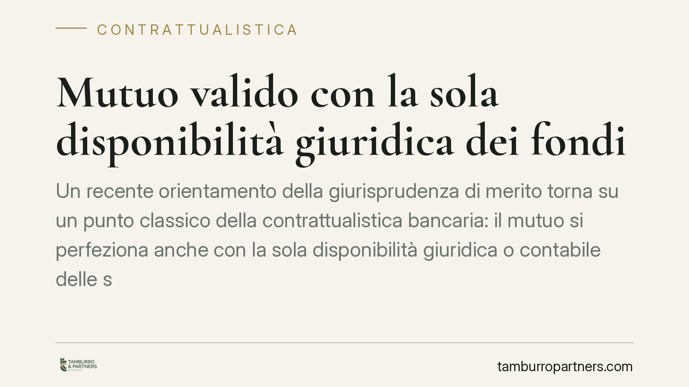

Mutuo valido con la sola disponibilità giuridica dei fondi
Un recente orientamento della giurisprudenza di merito torna su un punto classico della contrattualistica bancaria: il mutuo si perfeziona anche con la sola disponibilità giuridica o contabile delle somme, senza consegna materiale del denaro. La questione incide direttamente sulla validità del contratto e sulla sua azionabilità come titolo esecutivo. Vediamo cosa cambia, e con quali cautele va letta la pronuncia.

Il caso e una premessa di metodo
La pronuncia segnalata è attribuita alla Corte d'Appello di Firenze (sent. n. 1974/2026). Segnaliamo che numero e data vanno trattati come riferimento in corso di verifica e pubblicazione: la collocazione temporale appare anomala e non è al momento riscontrabile nelle banche dati ufficiali. Ne trattiamo quindi i principi di diritto, che sono consolidati, prescindendo dal dato numerico.
Il nodo è antico e ricorrente nel contenzioso bancario: quando può dirsi effettivamente erogato un mutuo? E, soprattutto, quando il contratto vale come titolo esecutivo utile all'istituto per procedere contro il debitore?
Inquadramento normativo
L'art. 1813 c.c. definisce il mutuo come il contratto con cui una parte consegna all'altra una somma di denaro o altra quantità di cose fungibili, obbligandosi l'altra a restituirne altrettante della stessa specie e qualità. La formula letterale evoca la consegna, elemento che storicamente ha portato a inquadrare il mutuo tra i contratti reali, cioè quelli che si perfezionano con la *traditio* (il materiale passaggio del bene).
L'orientamento della Cassazione ha però progressivamente svalutato la necessità della consegna materiale di banconote. Si è affermato che la "consegna" rilevante ai fini del perfezionamento può realizzarsi anche attraverso la disponibilità giuridica delle somme: accrediti su conto corrente, giroconti, messa a disposizione contabile delle risorse. In questa lettura, ciò che conta è che il mutuatario acquisisca il potere di disporre del denaro, non la forma fisica del trasferimento.
Particolarmente significativo è il tema del mutuo di scopo e dell'accredito su conto vincolato. Anche quando la somma viene immediatamente destinata a una finalità predeterminata (ad esempio l'estinzione di una pregressa esposizione), la giurisprudenza riconosce il perfezionamento del contratto purché l'importo sia entrato nella sfera giuridica del mutuatario, sia pure per un istante tecnico-contabile.
Il collegamento con il titolo esecutivo
Il punto pratico decisivo riguarda l'art. 474 c.p.c. Perché un atto possa valere come titolo esecutivo, il credito deve essere certo, liquido ed esigibile. Nel mutuo, ciò presuppone che l'erogazione si sia effettivamente verificata.
Se il contratto documenta solo una promessa di erogare e l'effettiva messa a disposizione delle somme resta da provare altrove, l'azionabilità esecutiva si indebolisce. Se invece il contratto attesta la già avvenuta disponibilità giuridica delle somme in capo al mutuatario, l'istituto dispone di un titolo più solido per procedere.
Il mutuo condizionato
Discorso distinto per il mutuo condizionato, cioè quello la cui erogazione è subordinata al verificarsi di un evento (consolidamento dell'ipoteca, produzione di documentazione, perfezionamento di altri atti).
Finché la condizione non si avvera, la somma non è ancora nella disponibilità del mutuatario: il contratto non può fondare una pretesa restitutoria immediata né, di regola, valere come titolo esecutivo. La verifica dell'avveramento della condizione diventa quindi il passaggio dirimente per stabilire se e quando il credito sia esigibile.
Implicazioni pratiche
Per gli istituti di credito, la pronuncia conferma la validità delle prassi di erogazione contabile, ma richiama all'attenzione sulla documentazione: il contratto deve dare conto in modo inequivoco dell'avvenuta disponibilità giuridica.
Per i mutuatari e i consumatori, il principio ridimensiona le contestazioni fondate sulla sola mancata consegna materiale del denaro. Resta invece aperto lo spazio difensivo quando l'erogazione sia solo promessa, oppure quando una condizione non si sia avverata.
Cosa fare in concreto
- Verificare nel testo contrattuale come è formulata la clausola di erogazione: consegna, accredito, messa a disposizione o mera promessa.
- Controllare se il mutuo è condizionato e se la condizione risulta effettivamente avverata e documentata.
- Ricostruire i flussi contabili (estratti conto, quietanze, contabili di accredito) che attestano la disponibilità delle somme.
- Distinguere la data di stipula dalla data di effettiva disponibilità giuridica: sono rilevanti ai fini dell'esigibilità.
- È opportuna una verifica documentale preventiva della coerenza tra contratto, erogazione e titolo, prima di valutare qualsiasi iniziativa in sede esecutiva.
---
Contributo informativo a cura di Tamburro & Partners Avvocati. Non costituisce parere legale.
Ogni contratto ha il suo equilibrio.
Se vuoi una revisione delle clausole o una redazione su misura, scrivi allo studio. Ti rispondiamo entro un giorno lavorativo.